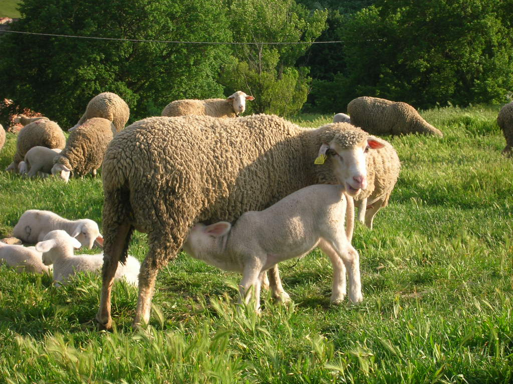
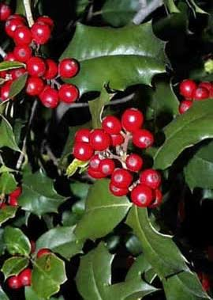
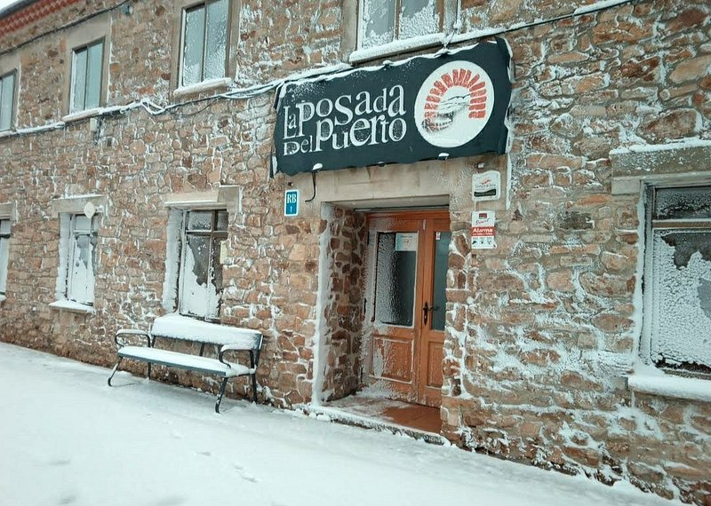
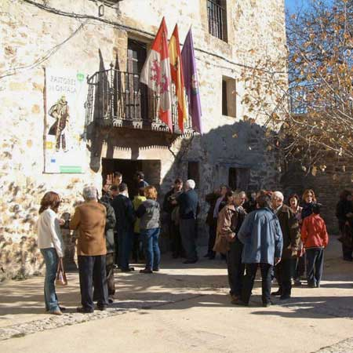
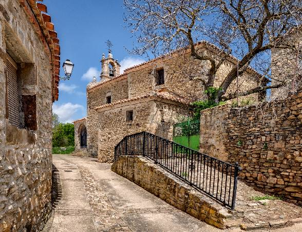

Clima
Su clima es de tipo continental, con inviernos muy largos y duros, para pasar a unos veranos cortos y templados; la estación primaveral casi no se percibe y el otoño pasa rápidamente. Es un clima típico de las zonas de montaña.
Un paseo por la historia de este maravilloso pueblo soriano
Oncala es un municipio de España perteneciente a la provincia de Soria, en la comunidad autónoma de Castilla y León. Tiene una población de 61 habitantes (INE 2025) e incluye las localidades de El Collado, Navabellida, Oncala y San Andrés de San Pedro.

Su clima es de tipo continental, con inviernos muy largos y duros, para pasar a unos veranos cortos y templados; la estación primaveral casi no se percibe y el otoño pasa rápidamente. Es un clima típico de las zonas de montaña.
El término municipal de Oncala se ubica al noreste de la provincia de Soria, dentro de la comarca de Tierras Altas. La distancia a la capital es de 31 kms. y se accede a través de la C-115.
Se celebran el primer fin de semana de septiembre en honor a la Virgen del Espino y San Millán.
Es el patrón de Oncala y su fiesta se celebra el 12 de Noviembre.

Su fauna también es muy extensa y variada; los herbívoros son los grandes mamíferos por excelencia de la zona, entre estos cabe destacar a los ciervos y los corzos por su vistosidad, el jabalí bastante más esquivo se puede ver por los parajes de matorral más densos, los zorros correteando desconfiados por cualquier tipo de terreno, representan al depredador por excelencia de la comarca.

Su flora es muy variada, el pino, la encina, el rebollo, el quejigo y el haya son las principales especies arbóreas presentes en toda la comarca. De forma aislada y mezcladas con las especies antes citadas podemos destacar otras especies de árboles también presentes en esta Comarca, como sebales, arces, fresnos, abedules, majuelos, etc. En las zonas próximas a los cauces de los ríos y cercanas a los pueblos podemos encontrar chopos y álamos, con algún nogal aislado; tambien hay matorral y pastizales.

Referente para comer en el municipio de Oncala, con cocina casera, regional y tradicional de las Tierras Altas de Soria.

«El Redil» es una asociación cultural para conservar las costumbres de Oncala y con ellas la trashumancia.

Se conservan ocho tapices de esta serie, denominada Apoteosis Eucarística. Entre éstos destacan los llamados El triunfo de la Fe y El triunfo de la Eucaristía. Llevan la marca inconfundible de Bruselas Brabante (entre dos BB), y la del tejedor Frans Van den Hecke (FVH), tapicero de Bruselas, decano del gremio de tejedores y tapicero de la Corte.

La ermita de Oncala es la Ermita de la Virgen del Pilar, situada en el Barrio de Abajo del municipio soriano. Fue construida a finales del siglo XVIII e impulsada por el ilustre obispo y arzobispo local Juan Francisco Ximénez del Río.